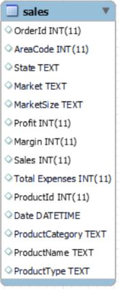
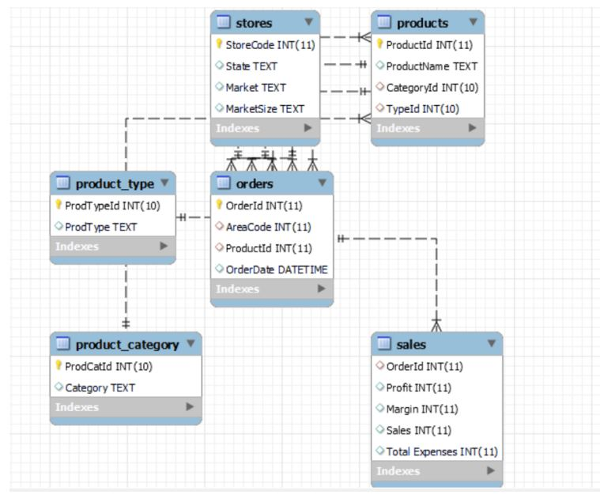

Normalizing Hello Coffee Shop MySQL Database
Database normalization is a fundamental concept in the field of database design and management. It is a process that helps ensure the efficiency, accuracy, and integrity of data stored in a relational database. The primary goal of normalization is to eliminate data redundancy and minimize data anomalies, such as insertion, update, and deletion anomalies, by organizing data into separate tables and defining relationships between them.
First Normal Form (1NF)
For a table to be in 1NF, the rules are:
These are the complete SQL queries used in this step.
.-- Working with the correct database USE hello_coffee; -- Selecting all from sales table SELECT * FROM sales; -- The table is in 1NF.
Second Normal Form (2NF)
For a table to be in 2NF, the rules are:
As shown on the EER Diagram below, the table has composite keys consisting of OrderId, AreaCode and ProductId. Some of the key attributes, like the State, are partially dependent only to a one candidate key which is AreaCode. This means that the table is not yet in 2NF.
New entities will be established. Namely, stores, orders, products.
After establishing these entities with their attributes, sales table must only contain attributes that have primary dependence on it such as OrderId, AreaCode, financial attributes, and ProductId. Hence, other columns will be dropped.
These are the executed queries to achieve 2NF.
.-- Creating stores tables CREATE TABLE stores AS SELECT DISTINCT AreaCode AS StoreCode, State, Market, MarketSize FROM sales; -- Defining the primary key ALTER TABLE stores MODIFY COLUMN StoreCode INT NOT NULL AUTO_INCREMENT PRIMARY KEY; -- Creating products table CREATE TABLE products AS SELECT DISTINCT ProductId, ProductName, ProductCategory, ProductType FROM sales; -- Defining the primary key ALTER TABLE products MODIFY COLUMN ProductId INT NOT NULL AUTO_INCREMENT PRIMARY KEY; -- Creating orders table CREATE TABLE orders AS SELECT OrderId, AreaCode, ProductId, `Date` AS OrderDate FROM sales; -- Defining the primary key ALTER TABLE orders MODIFY COLUMN OrderId INT NOT NULL AUTO_INCREMENT PRIMARY KEY; -- Defining orders foreign keys with stores table as parent table ALTER TABLE orders ADD FOREIGN KEY (AreaCode) REFERENCES stores(StoreCode) ON DELETE SET NULL, ADD FOREIGN KEY (ProductId) REFERENCES products(ProductId) ON DELETE SET NULL; -- Defining foreign keys on sales table and dropping some columns ALTER TABLE sales ADD FOREIGN KEY (OrderId) REFERENCES orders(OrderId) ON DELETE SET NULL, DROP COLUMN AreaCode, DROP COLUMN State, DROP COLUMN Market, DROP COLUMN MarketSize, DROP COLUMN ProductId, DROP COLUMN `Date`, DROP COLUMN ProductName, DROP COLUMN ProductCategory, DROP COLUMN ProductType;
Third Normal Form (3NF)
A table is said to be in the Third Normal Form when,
Observing the newly created tables, one of them violates 3NF rules. That table is products table. In this table, ProductCategory and ProductType depend only to ProductName, which dependes on ProductId. This is an example of transitive dependency. Tables still need to be broken down in such a way that new tables will be formed from products table, namely:
Defining primary keys and foreign keys will also take place. After that, a few attributes from orders and sales table will be replaced by Ids from each parent tables.
These are the executed queries to achieve 2NF.
.
-- Creating product_category table
CREATE TABLE product_category AS
SELECT DISTINCT ProductCategory AS Category
FROM products;
-- Adding a new id column
ALTER TABLE product_category
ADD COLUMN ProdCatId INT;
-- Modifying it the primary key
ALTER TABLE product_category
MODIFY COLUMN ProdCatId INT(10) AUTO_INCREMENT PRIMARY KEY FIRST;
-- Creating product_type table
CREATE TABLE product_type AS
SELECT DISTINCT ProductType AS ProdType
FROM products;
-- Adding a new id column
ALTER TABLE product_type
ADD COLUMN ProdTypeId INT;
-- Modifying it the primary key
ALTER TABLE product_type
MODIFY COLUMN ProdTypeId INT(10) AUTO_INCREMENT PRIMARY KEY FIRST;
-- Renamming the products table as prod
RENAME TABLE products TO prod;
-- Adding columns to products table
ALTER TABLE products
ADD COLUMN CategoryId INT(10),
ADD COLUMN TypeId INT(10);
-- Turning off MySQL safe update mode
SET SQL_SAFE_UPDATES=0;
-- Joining the tables below
UPDATE products
LEFT JOIN product_category
ON products.ProductCategory=product_category.Category
SET products.CategoryId=product_category.ProdCatId;
UPDATE products
LEFT JOIN product_type
ON products.ProductType=product_type.ProdType
SET products.TypeId=product_type.ProdTypeId;
-- Dropping some columns from products
ALTER TABLE products
DROP COLUMN ProductCategory,
DROP COLUMN ProductType;
-- Specifying foreign keys
ALTER TABLE products
ADD FOREIGN KEY (CategoryId) REFERENCES product_category(ProdCatId) ON DELETE SET NULL,
ADD FOREIGN KEY (TypeId) REFERENCES product_type(ProdTypeId) ON DELETE SET NULL;
This is the EER Diagram of our normalized database:
